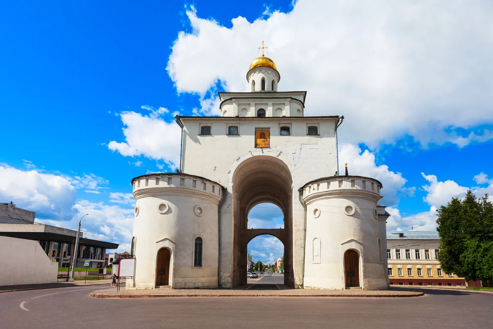
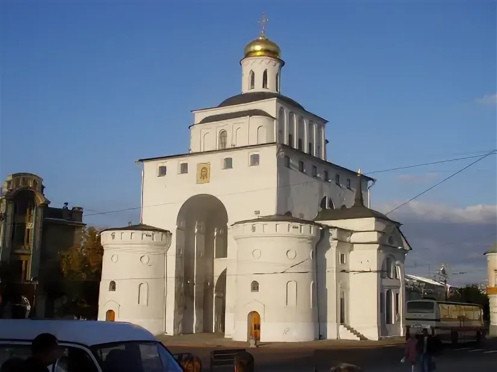

Золотые ворота
Архитектура



История и описание
Выдающийся памятник древнерусской военно-оборонительной архитектуры и монументального зодчества XII века, построенный в эпоху правления князя Андрея Боголюбского. Золотые ворота служили парадным въездом в самую богатую княжеско-боярскую часть города.
Дата основания: 1164 г.
Отзывы посетителей
Потрясающее монументальное сооружение. Внутри ворот расположен небольшой, но очень интересный военно-исторический музей с диорамой. Обязательно к посещению!
Постойка завораживает своей древней историей. Очень красиво смотрится в вечернее время, когда включается подсветка. Рядом находится Козлов вал, оттуда открывается отличный вид
Уникальное место, буквально прикасаешься к истории XII века. Белый камень выглядит величественно, вокруг все чисто и убрано